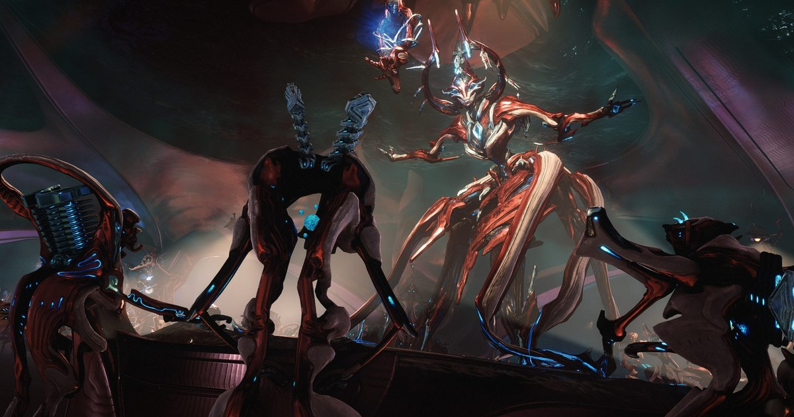

Warframe: Tau has a date — December 9, and it's the biggest swing in the game's history
Digital Extremes dated Warframe: Tau at Devstream 199: a free trip to a second star system on December 9, with a mob-run casino city, a new Warframe, and the game's first card game.

Digital Extremes finally put a date on it. At Devstream 199 today, the studio confirmed that Warframe: Tau launches December 9, 2026 — free on PC, console, and mobile — taking players to a second star system for the first time in the game's 13-year history.
Tau has lived in Warframe's lore for years, teased most heavily in the pivotal conversation in The New War. Now it's a place you can actually go. Creative Director Rebecca Ford called it "the biggest swing we could do" — and stressed that December 9 is only the start.
A second star system
Tau arrives with two regions at launch. First is Perita, a sandstorm-scoured desert home to descendants of the Dax, running six game modes — including a Survival variant with environmental hazards and an ecological system where you hunt larvae and bugs for a young scientist named Catylac. The developers' working codename for it was "Mad Max Dax," and it shows.
The headline region is Fornax, a ringed Sentient city run like a mob casino town — Digital Extremes describes the vibe as cyber Detroit crossed with Atlantic City, with Mass Effect, The Sopranos, and Boardwalk Empire among the inspirations. It's Warframe's first interconnected social hub system, with three connected hubs: the Last Bloom Lounge casino, the Manifold 90-BF industrial district, and a third hub still kept under wraps. You move between them by running bounties, launching missions from the star chart, driving the Highway Network — a car-combat mini-game where mob cars chase you down Sentient highways for resources — or taking a Night Walk, a first-person, non-combat stroll through the city with a hound at your side.
Fornax runs on a single syndicate, The Fornax Informer, a trio of newsies who know and publish everything happening in the city. At rank three, players can start detective work — collecting clues to solve a scandal at the Last Bloom Lounge for an exclusive reward. The city also has its own permanent skill-progression system, with buffs that apply in Fornax missions.
Brysko, Kullervo Prime, and a card game
The new Warframe is Brysko, the 67th frame — a Sentient Warframe brought back to life by Albrecht Entrati, silent to the world but alive in inner monologue voiced by Matthew Mercer. He fights with brass-knuckle melee, explosive playing cards, and an Exalted revolver magnum.
Kullervo Prime launches alongside Tau as the Prime Access, with increased armor and energy and two new Prime weapons: the Rauta Prime shotgun and the Vitrica Prime heavy blade. Like all Prime gear, it can be earned free through gameplay or unlocked instantly.
And Warframe is getting its first card game. Portau is a poker-style game you can play against the house, against other players, or with your squad — and a roulette game follows early next year. The mission lineup gets new flavors too: Spy returns after years away as a vault heist where you memorize codes and passwords, Mayhem is a brand-new mode about destroying the mob's property — including blowing up its limousines — and Racket sends squads to recover stolen funds and return them to extorted neighborhoods. The Tau quest itself runs roughly two hours, and the update ships with a full album of new music Ford described as "EDM meets trip hop meets acid wash."
Why this one matters
Ford's framing is the story: building a second star system took everything Digital Extremes has learned over 13 years, and the studio is treating Tau as a foundation, not a finish line. It lands right after the Epoch Operation: Taubound — which ended with the Infested home world Eris being consumed, and which the studio says was the most participated-in event in Warframe's history. The Infested get their response in 2027, when the developers plan a deep dive back in the Origin System.
The game now counts more than 90 million players, and it's nominated for Best Community Support at The Game Awards. Watch Geoff Keighley's show on December 10 for 30 minutes with a linked Twitch account and you get a free Caliban. December 9 is twelve days away. The Tenno are leaving the Origin System.
Sources: Warframe Creative Director Rebecca Ford Calls Tau "The Biggest Swing We Could Do", but Says December 9 Is Only the Start (Wccftech) · Warframe: Tau sets the date for release and reveals even more in new devstream (Pocket Gamer) · Warframe Heads to Second Star System 'Tau' on December 10 (Inven Global) · October Devstream Highlights - Warframe: Tau (Digital Extremes)
Gear up: Razer — mice, keyboards, headsets and laptops.